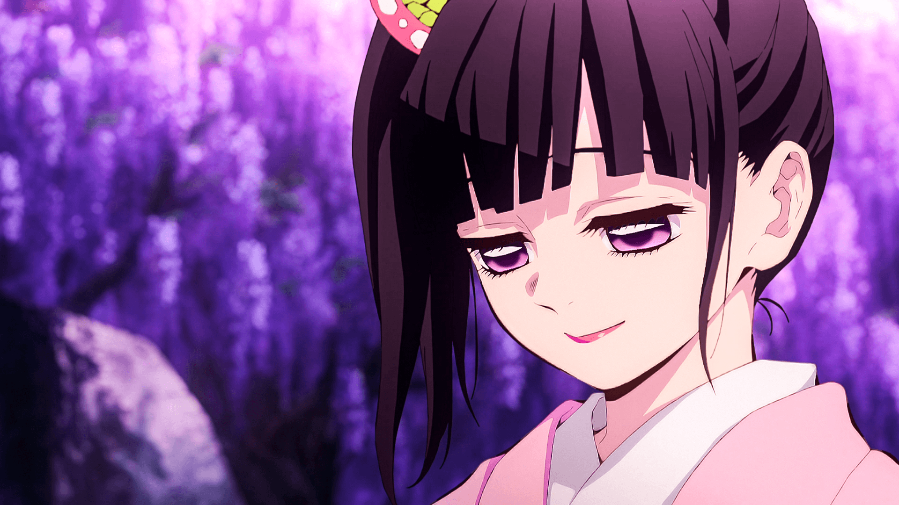
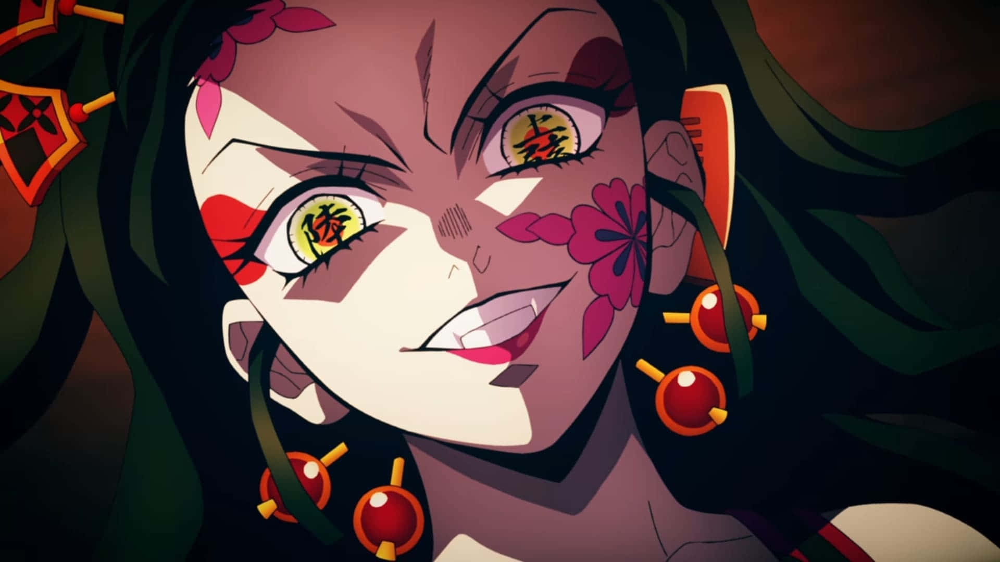
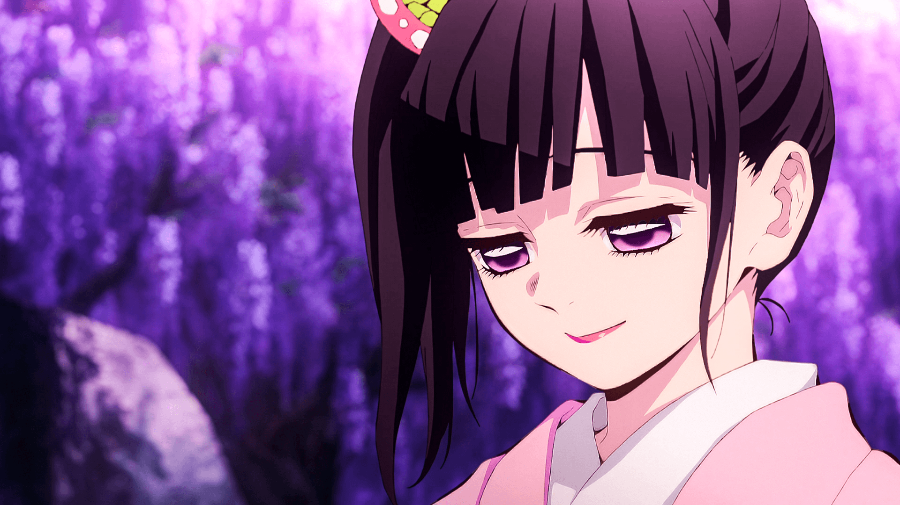
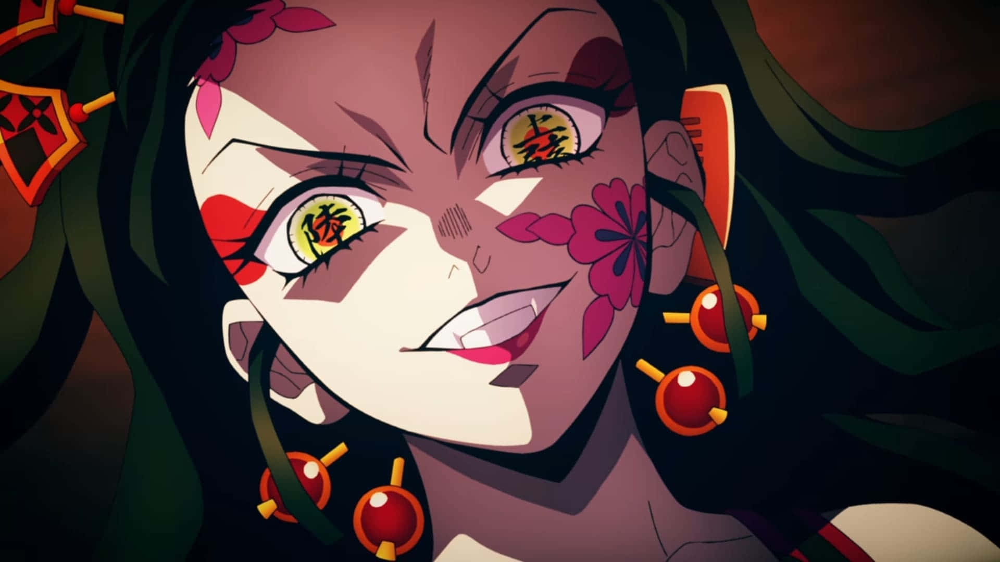

¿Quién es? La hermana menor de Tanjiro, convertida en demonio. Retiene su conciencia humana y se niega a consumir humanos, protegiéndolos en su lugar.
Poderes: Posee fuerza y regeneración sobrehumanas. Su técnica de sangre demoníaca, "Sangre Explosiva", le permite generar llamas rosas que solo dañan a los demonios.
Papel en el anime: Es la co-protagonista y la principal motivación de Tanjiro. Su existencia es clave en la lucha contra Muzan.
Creación y Canon: Nezuko es un personaje 100% canon. La autora, Koyoharu Gotouge, la diseñó para ser más que una "damisela en apuros"; es un símbolo de la voluntad de resistir.
Curiosidades: Su habilidad para conquistar el sol no es solo un poder; es el objetivo final de Muzan Kibutsuji, lo que la convierte en el demonio más importante de la serie.
Habilidades Únicas: A diferencia de otros demonios, Nezuko recupera su energía durmiendo en lugar de consumir humanos. Su Arte de Sangre Demoníaca también tiene un efecto curativo, capaz de quemar y neutralizar venenos demoníacos.

 


